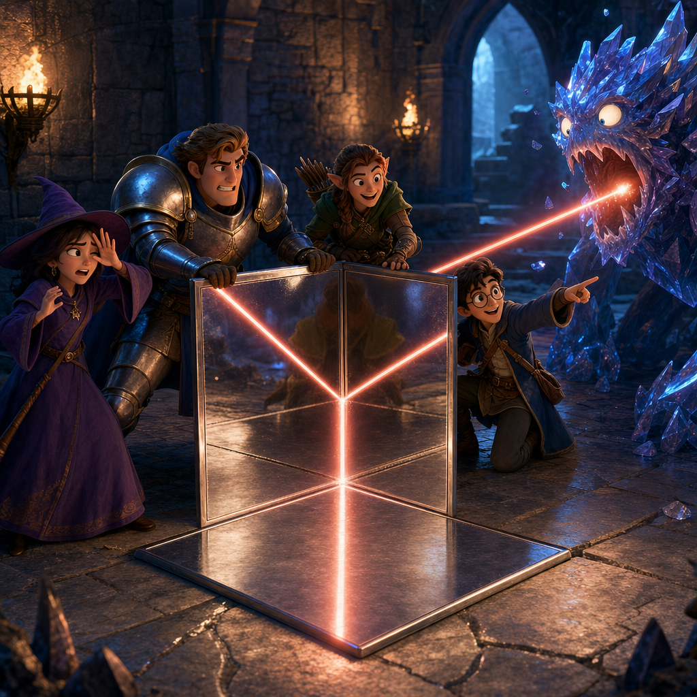
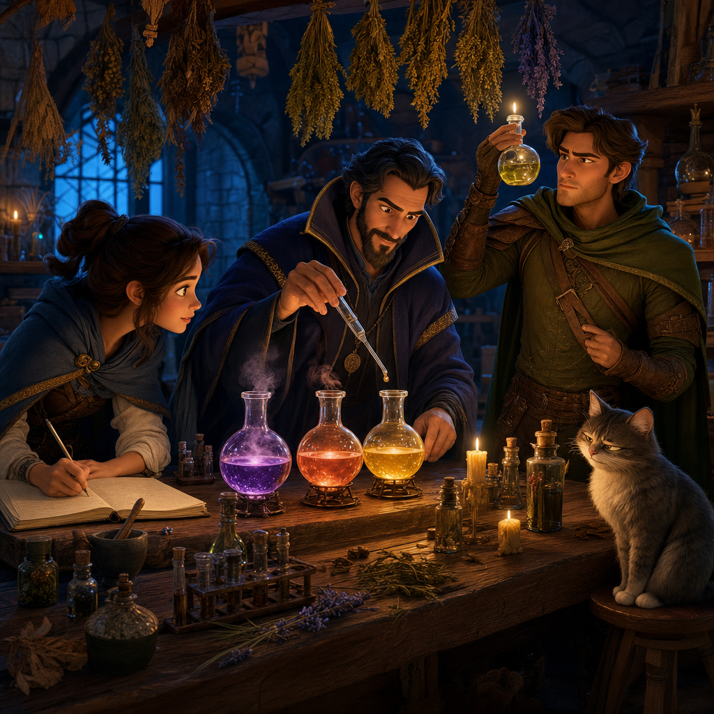
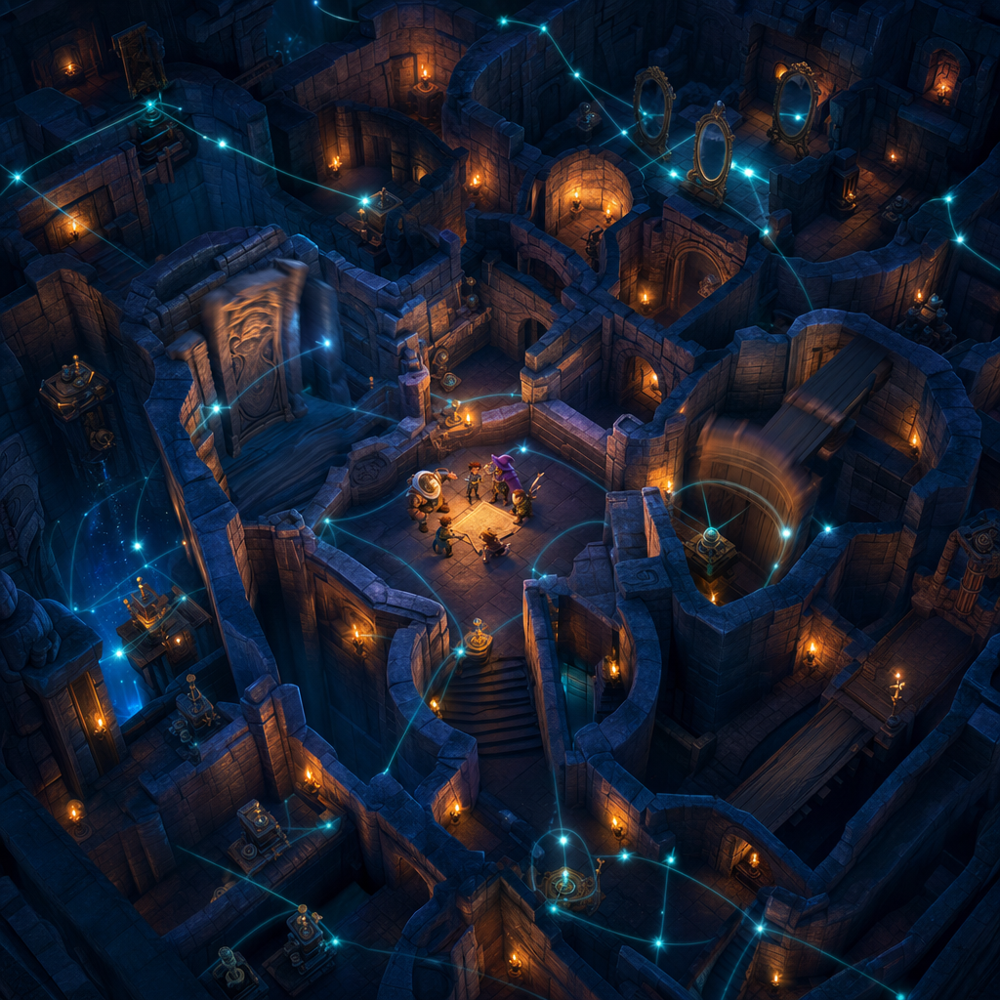
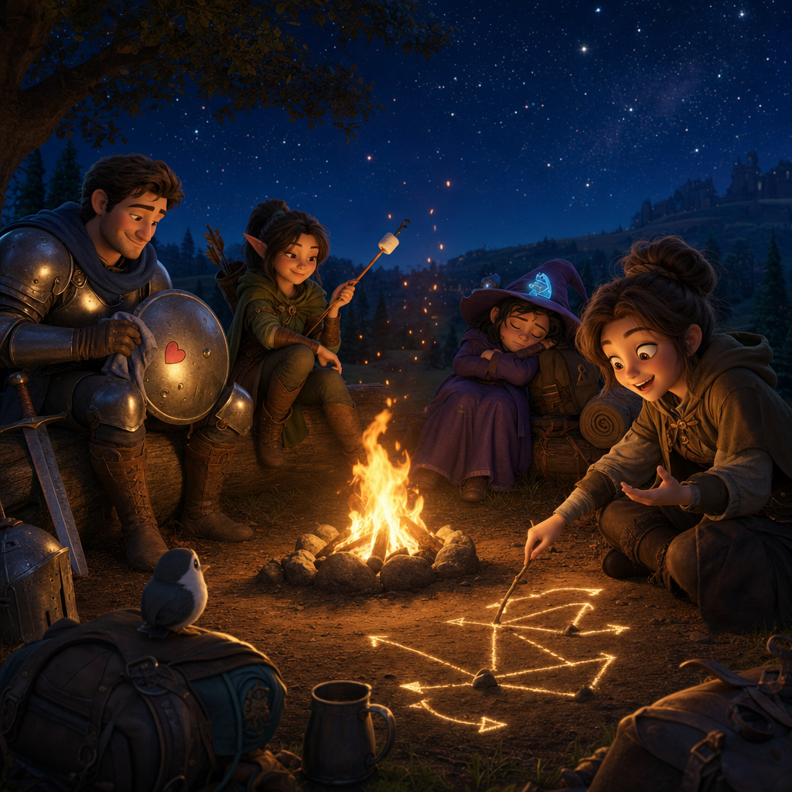

SERIES THREE 🗡️
MAZES & MAGES
Swords. Sorcery. Monsters. Surprisingly useful geometry.
A fantasy party enters a world of towers, dungeons, enchanted forests, and extremely suspicious treasure chests. A genius AI shapes each adventure to teach one real idea from science or mathematics. The heroes never stop adventuring for a lesson — understanding the lesson is how they survive.
Magic has wonder. The world still has rules. ✨
Mazes & Mages has the joyful spirit of tabletop role-playing: a party with different skills, terrible odds, clever plans, and occasional arguments about doors. Problems have understandable rules, and the audience gets enough clues to think alongside the heroes. A spell may begin the danger. Physics may finish it.
The monster fires lasers. The floor is the answer. 🔺
A monster attacks with a beam of light. The party notices metallic tiles on the
floor — and connects three of them at right angles, forming the inside corner of a
cube. This is a
corner reflector
A corner reflector is three mirrors joined like the inside
corner of a box — any light that enters bounces back exactly toward where it came
from. 📖
That trick is real — it's the idea behind bike reflectors and the mirrors astronauts left on the Moon. 🌝🚲

Your inventory now contains science. 🧪
Forces and levers ⚙️ · light and mirrors 🌈 · heat, pressure, electricity ⚡ · chemistry 🧪 · plants, animals, senses 🌿 · geometry, probability, logic ➗ · and above all: testing an idea before trusting it 🔎
The party may fail the first attempt. That matters. Science is not a magic word that makes a hero instantly right — it is a way to observe, predict, test, and try again without being eaten.

Every hero receives the puzzle they need. 🧠
Behind the adventures is a genius AI creating tailored situations. The reckless fighter faces a problem that cannot be punched. The quiet one turns out to be the only one who noticed the clue. It isn't trying to humiliate them — it's trying to help each of them grow. Its teaching methods simply involve rather a lot of monsters.

The music of the quest 🎻
MAZES & MAGES — Opening Song 🗡️🎶
The opening song is ready — coming to YouTube very soon! 🎵
MAZES & MAGES — Ending Song 🔥🎶
The ending song is ready — coming to YouTube very soon! 🎵
Quest log 📜
No pretend percentages — this changes only when something real changes.
- World rules and lesson ideas: 🌱 Growing
- Party and creature designs: 🌱 Growing
- Opening and ending music: ✨ Ready to hear
- First dungeon: 🌙 Not ready yet
From the tavern notice board 👀
Artist's impressions — the real designs live in the workshop.

Send the party a problem. 🧩
Know a scientific idea that could become a trap, monster, potion, bridge, or escape? One sentence is enough.